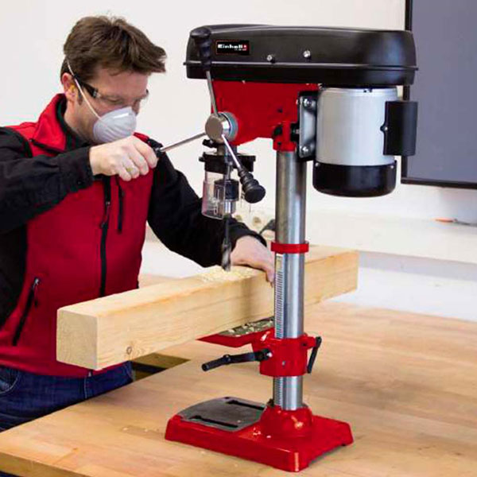

Un barreno es un dispositivo o herramienta utilizado para realizar agujeros o pozos cilíndricos extrayendo el material sólido perforado (ver Tornillo de Arquímedes) por medio de un tornillo helicoidal rotatorio. El material es desplazado a lo largo del sentido del eje de rotación.
